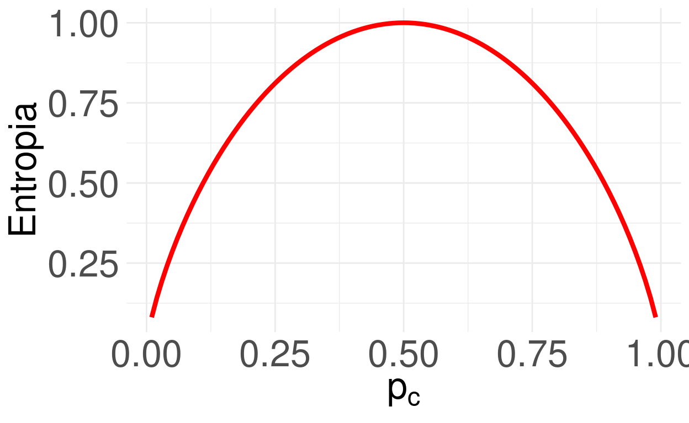
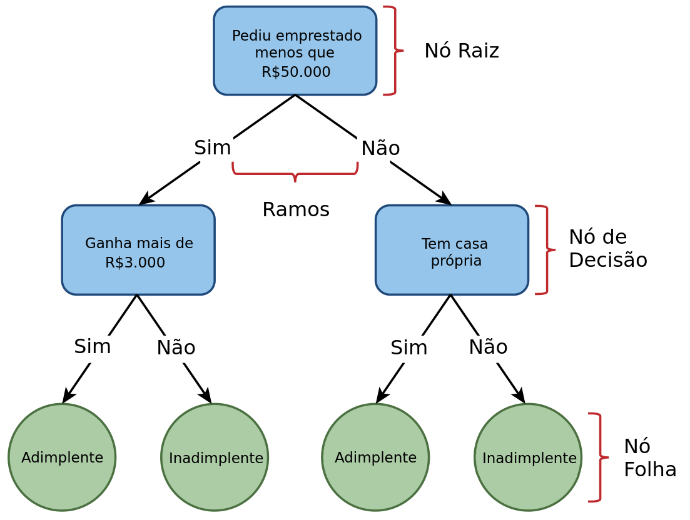
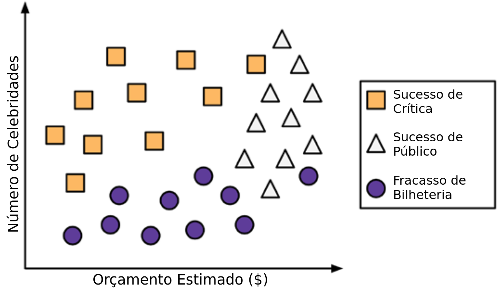
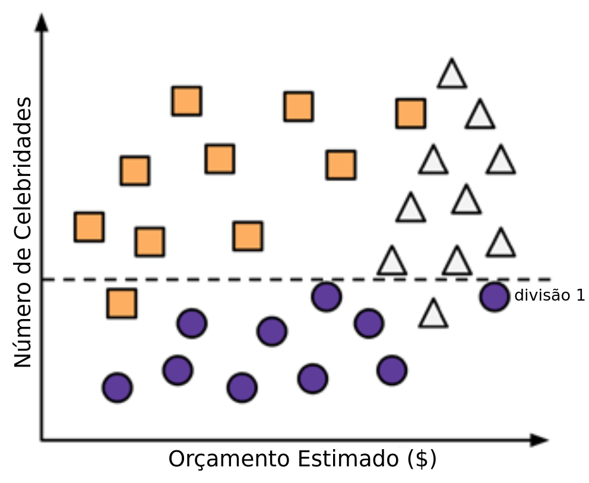
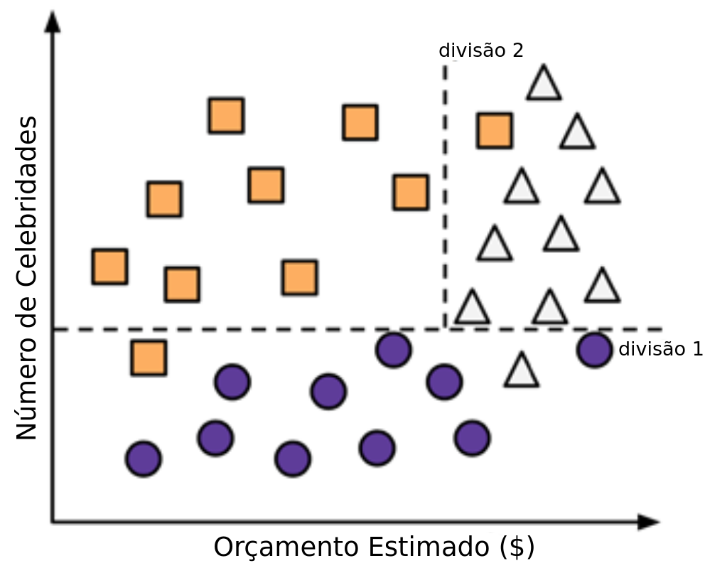
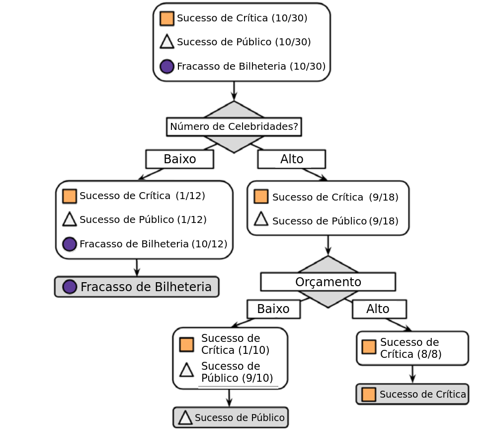
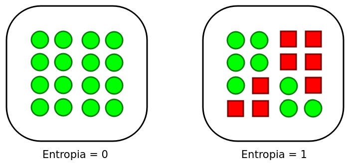
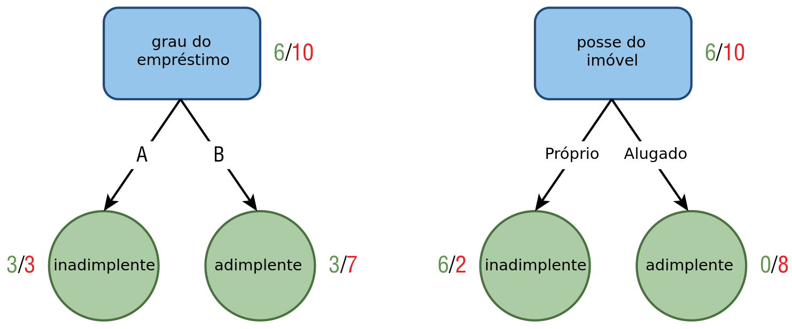

Árvores de Decisão
ESTAT0016 – Tópicos Especiais em Estatística (Introdução à Apredizagem de Máquina)
Prof. Dr. Sadraque E.F. Lucena
Introdução
- Árvores de decisão são métodos de classificação usando a estratégia dividir e conquistar.
- Nela, os dados são divididos em subgrupos menores até se tornarem o mais homogêneos possível.
Exemplo
-
Imagine que temos um grande conjunto de dados como uma floresta.
Dividir: Como numa exploração, escolhemos a característica mais importante para dividir nossa floresta em áreas menores.
-
Conquistar: Em cada área, fazemos decisões simples.
- Exemplo: “Se horas de estudo > 5 e participação nas aulas > 80%, então prevemos que o aluno passará na displina”.
Combinar: Finalmente, alcançamos os nós terminais, como encontrar tesouros no fim de nossa jornada, representando as previsões finais.
Árvores de Decisão
- Árvores de decisão utilizam uma estrutura semelhante a uma árvore para representar a relação entre preditores e resultados potenciais.
- Quando o resultado é uma categoria, temos uma árvore de classificação; quando o resultado é numérico, temos uma árvore de regressão.
Estrutura de uma árvore de decisão
-
Inicia-se com o nó raiz, que representa o conjunto completo de dados.
- Partições menores surgem à medida que a árvore se divide e se desenvolve.
-
Os pontos de divisão na árvore são chamados de nós de decisão.
- Cada ramo leva a novos nós de decisão ou nós folha.
Os nós terminais são os nó folha, que representam a classificação final ou previsões.
Árvores de Decisão

Árvores de Decisão
-
A lógica de uma árvore pode ser interpretada como uma regra paara predizer o resultado.
- Exemplo: SE [cliente pediu emprestado mais de R$50.000] E [cliente possui uma casa] ENTÃO [cliente será adimplente].
-
A facilidade de converter árvores de decisão em regras do tipo SE-ENTÃO-SENÃO as torna uma escolha popular para classificação.
- Ideal para situações que exigem transparência legal, conformidade ou comunicação efetiva com não especialistas.
- Vejamos como uma árvore é construída.
Construção da árvore (particionamento recursivo)
-
Passo 1: Escolha do Nó Raiz
- Cada atributo é utilizado para dividir os dados em dois grupos distintos (nós filhos).
- O atributo que gera grupos mais homogêneos da variável alvo é escolhido como nó raiz.
-
Passo 2: Criação de Nós Filhos
- Para cada nó filho, subdivida o grupo usando o atributo que gera subgrupos mais homogêneos. Crie nós filhos para esses subgrupos.
-
Passo 3: Critério de Parada
- Repita o Passo 2 até atingir um critério de parada.
-
Passo 4: Atribuição de Rótulo às Folhas
- Quando um critério de parada é alcançado, rótulos são atribuídos às folhas.
- O rótulo é determinado pela classe majoritária dos exemplos presentes na folha.
Construção da árvore
Exemplo
Um estúdio de Hollywood precisa decidir se deve avançar na produção dos roteiros apresentados por novos autores promissores. Como não há tempo para ler completamente cada roteiro, você decide usar um algoritmo de árvore de decisão para prever se um possível filme se encaixaria em uma das três categorias: Sucesso de Crítica, Sucesso de Público ou Fracasso de Bilheteria.
- Para construir a árvore você considera como dados de treino os 30 lançamentos recentes do estúdio. Rapidamente você percebe uma relação entre o orçamento estimado para as filmagens, o número de celebridades escaladas para papéis principais e o nível de sucesso. Animado com essa descoberta, você produz um gráfico de dispersão para ilustrar o padrão:
Construção da árvore

Construção da árvore
- Passo 1: Para criar o nó raiz usamos o número de celebridades no filme.

Construção da árvore
- Passo 2: Nos filmes com muitas celebridades, subdividimos entre alto e baixo orçamento.

Construção da árvore
- Se desejássemos, poderíamos continuar dividindo os dados até que cada valor seja classificado corretamente.
- No entanto, decisões excessivamente específicas nem sempre generalizam bem novos dados.
- Como já temos mais de 80% de exemplos em uma única classe, vamos parar por aqui. Este é o critério de parada adotado.
Construção da árvore

Construção da árvore
Como escolher o valor de divisão?
-
Durante o particionamento recursivo, os atributos são divididos da seguinte forma:
Para variáveis categóricas, agrupando os valores do atributo em dois subconjuntos.
-
Exemplo: Um atributo com três valores {a, b, c} será avaliada como
- {a} versus {b, c};
- {b} versus {a, c};
- {c} versus {a, b}.
Para variáveis numéricas, os valores de divisão são baseados no ponto médio entre pares de valores consecutivos.
Exemplo: um tributo com quatro valores {1, 3, 8, 11} será avaliada com base em divisões maiores ou menores que {2, 5.5, 9.5}.
Construção da árvore
Como definir o valor de divisão que será usado?
Para definir qual valor de divisão será usado em um nó da árvore é usada uma medida de pureza.
-
O grau de pureza de uma partição corresponde ao quanto os dados do mesmo subgrupo pertencem à mesma classe.
- Uma partição em que todos os dados pertencem à mesma classe é chamada pura.
- Uma partição em que metade dos dados é de uma classe e a outra metade é de outra é considerada impura.
Assim, a melhor partição será sempre aquela que fornecer a menor impureza.
Vejamos algumas métricas de impureza que podem ser usadas.
Entropia
A entropia quantifica o nível de impureza que uma partição possui (quanto maior a impureza, maior a entropia).
Considere um conjunto de dados cuja saída possui \(C\) classes. Para uma partição \(D\), a entropia é definida como \[ \text{Entropia}(D) = - \sum_{c=1}^C p_c \log_2(p_c), \] em que
\(c\) representa uma classe da saída (\(c=1,\ldots,C\));
\(p_i\) é a proporção de dados pertencentes a classe \(c\);
\(\log_2(\cdot)\) é o lograritmo na base 2.
Entropia
- A entropia varia de 0 (todos os dados da partição pertencem á mesma classe) a \(\log_2(c)\) (todas as classes tem a mesma porpoção dentro da partição).
- Quando o número de classes da saída é 2, a entropia varia de 0 a 1, pois \(\log_2 (2) = 1\).

Entropia
Exemplo 8.1
Considere um conjunto de dados de treinamento com informações de 30 clientes de um banco, onde 16 quitaram suas dívidas (adimplentes) e 14 não quitaram (inadimplentes). Para analisar a entropia, uma partição é criada com base na decisão de se o cliente solicitou ou não um empréstimo de R$ 50.000.
- Dentre os clientes que solicitaram mais de R$ 50.000, 10 são adimplentes e 6 são inadimplentes. Calcule a entropia (grau de impureza) nessa partição.
Entropia
Exemplo 8.1
Considere um conjunto de dados de treinamento com informações de 30 clientes de um banco, onde 16 quitaram suas dívidas (adimplentes) e 14 não quitaram (inadimplentes). Para analisar a entropia, uma partição é criada com base na decisão de se o cliente solicitou um empréstimo maior ou menor que R$ 50.000.
- Dentre os clientes que solicitaram mais de R$ 50.000, 10 são adimplentes e 6 são inadimplentes. Calcule a entropia (grau de impureza) nessa partição. \[ \text{Entropia}(D) = -\left[ \frac{10}{16}\,\log_2\left(\frac{10}{16}\right) + \frac{6}{16}\,\log_2\left(\frac{6}{16} \right) \right] = 0,\!9544 \]
- A entropia calculada indica um alto grau de impureza na partição.
Entropia
- Podemos visualizar como a entropia varia em relação à distribuição dos exemplos quando temos duas classes.
- Ao conhecer a proporção de exemplos em uma classe (\(p_c\)), automaticamente sabemos que a proporção na outra classe é (\(1-p_c\)).
- Então temos:
Ganho de Informação
- O ganho de informação é uma métrica usada para seleção do atributo que formará um nó.
- Ela avalia a redução na entropia ao particionar os dados segundo cada atributo disponível.
- O atributo a ser escolhido para o nó será aquele que produz nós filhos com menor entropia (maior ganho de informação).
- Matematicamente, o ganho de informação é calculado como a diferença entre a entropia do nó pai (\(D_{pai}\)) e a soma ponderada das entropias dos nós filhos (\(D_{filhos}\)) resultantes da divisão.
- Para um atributo \(A\), o ganho de informação é representado por \[ \text{Ganho de Informação}(A) = \text{Entropia}(D_{pai}) - \text{Entropia}(D_{filhos}). \]
Ganho de Informação
-
\(\text{Entropia}(D_{filhos})\) corresponde à entropia combinada dos nós filhos.
- Se definirmos \(D_i\), \(i=1,\ldots,n\), como o nó filho \(i\) e \(w_i\) como a proporção de dados contidos na partição \(D_i\), temos \[ \text{Entropia}(D_{filhos}) = \sum_{i=1}^n w_i \,\text{Entropia}(D_i) \]
-
Obs.: Essa métrica pode ser tendenciosa para atributos com muitos valores distintos. Uma alternativa é usar a taxa de ganho de informação, dada por \[ \text{Taxa de Ganho}(A) = \frac{\text{Ganho de Informação}(A)}{\text{Informação Intrínseca}(A)} \]
- Mais informações sobre a taxa de ganho podem ser encontradas em Quinlan, J. Ross. “Induction of Decision Trees.” Machine Learning 1.1 (1986): 81–106.
Ganho de Informação
Exemplo 8.2
Vamos prosseguir com os dados do Exemplo 8.1. Agora, estamos prestes a criar uma partição no nó correspondente aos clientes que solicitaram mais de R$ 50.000. Nesse ponto, enfrentamos a escolha entre dois atributos para esta nova divisão: o grau do empréstimo (com categorias \(A\) e \(B\)) e posse do imóvel (próprio ou alugado). Para determinar qual atributo será utilizado na nova partição, é essencial avaliar o ganho de informação associado a cada um deles. Calcule o ganho de informação baseado na imagem abaixo.

Índice de Gini
Outra métrica para quantificar o grau de impureza de uma partição é o índice de Gini. Para uma partição \(D\) com as classes \(c=1,\ldots,C\), ele é dado por \[ \text{Gini}(D) = 1 - \sum_{c=1}^C p_c^2 \] em que \(p_c\) é a proporção de dados da classe \(c\).
-
O índice de Gini varia de \(0\) a \((C-1)/C\).
- Para duas classes (\(C=2\)), o índice de Gini varia de \(0\) a \(0,\!5\).
Assim como a entropia, quanto maior o índice de Gini maior a impureza da partição.
Poda da árvore
Já vimos que o processo de particionamento recursivo continua indefinidamente até encontrar um critério de parada.
-
Dois critérios comuns são:
- Todas as instâncias dentro de uma partição pertencem à mesma classe.
- Todos os atributos do conjunto de dados foram usados.
Se a árvore crescer sem restrições até atender a um ou ambos esses critérios, ela pode ficar muito grande e ajustar-se demais (decorar) aos dados de treinamento.
Para evitar isso, reduzimos o tamanho da árvore durante ou após o processo de crescimento para generalizar melhor em relação aos dados não vistos. Esse processo é conhecido como poda.
Dois tipos de poda podem ser usados: pré-poda pós-poda.
Poda da árvore
Pré-poda
-
A pré-poda é realizada durante o particionamento recursivo. Alguns critérios podem ser:
- Especificar um número máximo de atributos a serem considerados;
- Determinar um número máximo de nós de decisão;
- Definir um número mínimo de instâncias em cada partição.
Vantagem: evita a criação de ramos e nós desnecessários, economizando ciclos de computação.
Desvantagem: ao interromper o crescimento da árvore prematuramente, é possível perder certos padrões nos dados.
Poda da árvore
Pós-poda
- Aqui permite-se que a árvore de decisão cresça o máximo possível e, em seguida, reduz-se seu tamanho.
- Esse processo consiste em designar sucessivamente nós de decisão como nós folha ou eliminá-los completamente.
- Vantagem: proporciona o benefício significativo de ser mais eficaz na descoberta de padrões importantes nos dados.
- Desvantagem: é computacionalmente menos eficiente em comparação com a pré-poda.
Exemplo 8.3
Considere os dados abaixo e construa uma árvore de decisão para a variável sair usando a entropia para quantificar a impureza.
| Tempo | Temp. | FDS | Jogar? | Tempo | Temp. | FDS | Jogar? |
|---|---|---|---|---|---|---|---|
| Ensolarado | Quente | Sim | Sim | Ensolarado | Quente | Não | Não |
| Chuvoso | Moderado | Não | Não | Chuvoso | Moderado | Sim | Sim |
| Chuvoso | Quente | Sim | Não | Ensolarado | Quente | Sim | Sim |
| Ensolarado | Moderado | Não | Sim | Chuvoso | Moderado | Não | Não |
| Chuvoso | Quente | Não | Não | Ensolarado | Quente | Sim | Sim |
| Ensolarado | Moderado | Sim | Sim | Chuvoso | Moderado | Não | Não |
| Chuvoso | Quente | Sim | Sim | Ensolarado | Quente | Sim | Sim |
FDS: fim de semana.\(\quad\)Temp.: temperatura.
Algoritmos
Existem diversos algoritmos de árvores de decisão, cada um com suas características específicas e métodos de construção. Alguns são mais adequados para determinados tipos de problemas ou conjuntos de dados do que outros.
-
Nesta aula veremos os algoritmos:
- CART (Classification and Regression Trees)
- C5.0
Outros algoritmos podem ser encontrados em https://topepo.github.io/caret/available-models.html
Algoritmo CART (Classification And Regression Tree)
Desenvolvido por Leo Breiman, Jerome Friedman, Richard Olshen, e Charles Stone em 1984.
Este algoritmo sempre gera uma árvore binária, onde cada nó tem precisamente dois nós-filhos (outros algoritmos podem ter múltiplos nós-filhos).
-
O termo CART serve como um termo genérico para as seguintes categorias de árvores de decisão:
-
Árvores de Classificação: quando a variável alvo é uma classe.
- As divisões em cada nó da árvore é baseada no índice de Gini.
-
Árvores de Regressão: quando a variável alvo é contínua.
- As divisões em cada nó da árvore é baseada na soma do quadrado dos resíduos entre a observação e a média em cada nó.
-
Algoritmo CART (Classification And Regression Tree)
Vantagens
- Requer supervisão mínima e produz modelos fáceis de entender.
- Lida com dados categóricos e numéricos.
- Adota estratégias para lidar com dados ausentes, como imputação ou exclusão desses valores durante a divisão, garantindo robustez na presença de dados incompletos.
- Árvores de classificação e regressão realizam implicitamente a seleção de características.
- Outliers não têm um efeito significativo no CART.
Desvantagens
- Tende ao sobreajuste, especialmente quando a árvore cresce muito.
- Pode ser viesado se os preditores têm muitas categorias.
- A estrutura da árvore pode ser instável (pequenas alterações nos dados de treinamento podem resultar em grandes mudanças na lógica de decisão).
O algoritmo C5.0
- Criado por J. Ross Quinlan como uma evolução do aclamado algoritmo C4.5, que por sua vez melhorou o algoritmo Iterative Dichotomiser 3 (ID3).
- Amplamente empregado na construção de modelos de árvores de decisão.
- Seleciona o melhor atributo com base na entropia.
- Adota estratégias para lidar com dados ausentes, como imputação ou exclusão desses valores durante a divisão, garantindo robustez na presença de dados incompletos.
- Utiliza a técnica de pós-poda como principal estratégia de regularização, permitindo que a árvore cresça até se ajustar aos dados e, em seguida, removendo nós e ramos com pouco impacto na classificação, evitando assim o sobreajuste.
- Usado para classificação.
O algoritmo C5.0
Vantagens
- Alto desempenho com grandes conjuntos de dados.
- Lida com atributos contínuos e categóricos
- Mecanismo robusto de poda: Evita sobreajuste e melhora a generalização.
- Capaz de lidar com dados ruidosos.
- Fácil de interpretar.
Desvantagens
Sensível a valores ausentes
Dificuldade de captar interações complexas não lineares.
FIM